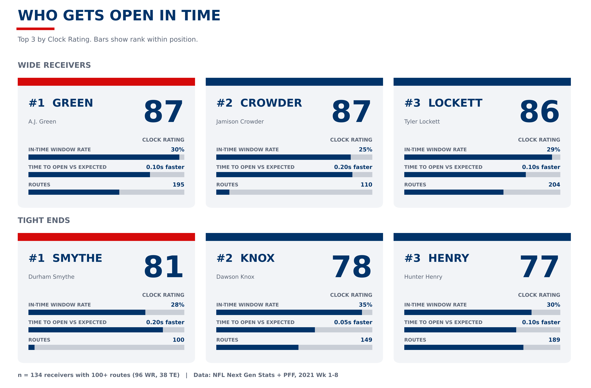
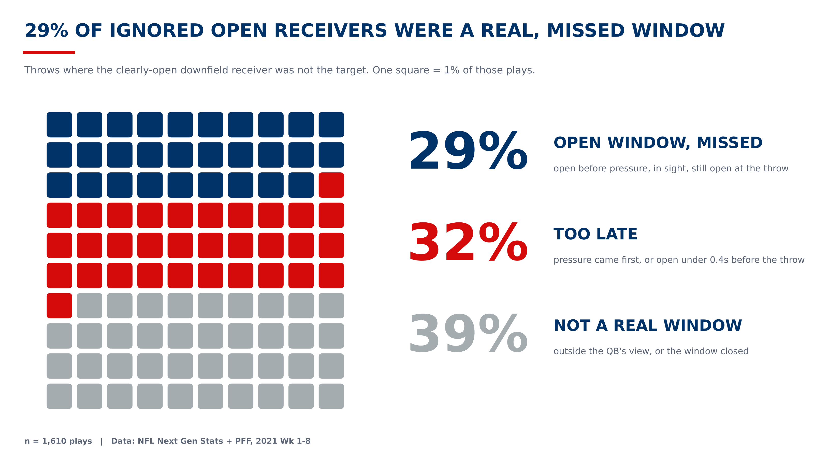
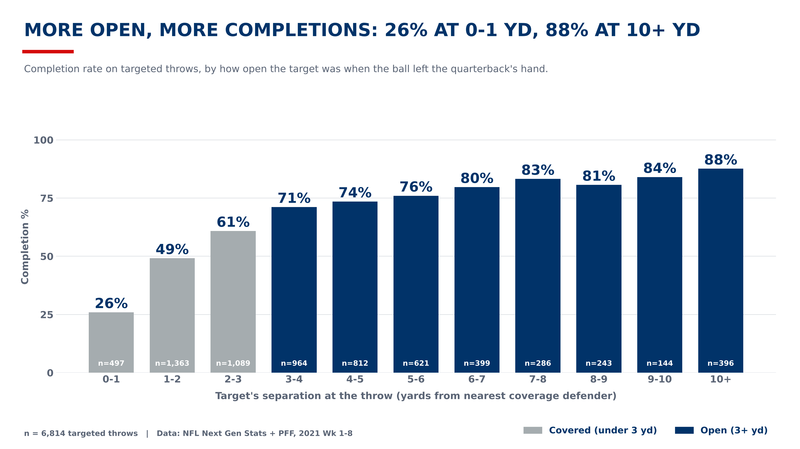

A receiver ranking built from player tracking: who gets open early enough, and in the quarterback's sight, to be thrown to.
Clock Rating is a percentile within position (100+ routes). It rewards getting open before pressure, in the quarterback's view, and sooner than expected for the route.
| # | Player | Clock Rating | In-time windows | Opens vs. expected | Routes |
|---|
Bars show rank within position.

Real tracking data. Press Play. A receiver turns yellow when the nearest defender is 3+ yards away; the pocket clock turns red when the rush reaches the quarterback. Blue line: line of scrimmage.
Plays where the clearly open downfield receiver was not the target, sorted by what the tracking shows.

Completion rate climbs with every yard of separation, which is why getting open in time matters.
